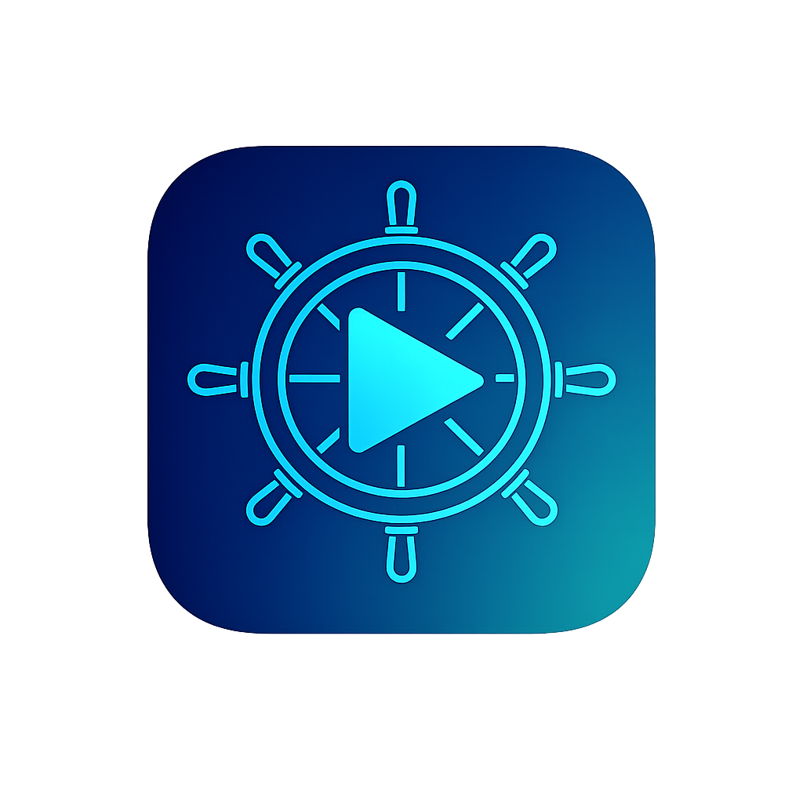

Nautilarr
A native, open-source client for your self-hosted media stack.
iPhone & iPad (AltStore)
Add this source URL in AltStore → Browse → Sources:
https://drakonis96.github.io/nautilarr/apps.json
Mac
Download the .app zip from
Releases,
then authorise it in System Settings → Privacy & Security.